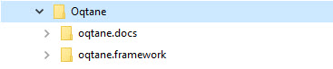
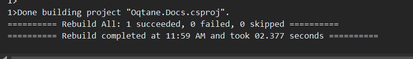

Build and Deploy the Documentation
Setup
To set everything up, clone the oqtane.docs and the oqtane.framework repositories
in the same parent folder (e.g., c:\projects\oqtane), creating a structure like:
c:\projects\oqtane(example)oqtane.docscloned from oqtane.docsoqtane.frameworkcloned from oqtane.framework
some-root\
├── oqtane.docs
├── oqtane.framework
That will look like this:

Build and Test Locally
Depending on your preferred toolchain, you can use
- VS Code (recommended🌟)
- Visual Studio 2022
Build and Test Locally using VS Code
Run with VS Code:
Open the
Oqtane.Docs.code-workspaceworkspace located in the/srcfolder.Rebuild the entire solution
Either using
Ctrl+Shift+B.Or by hitting
Ctrl + Shift + Pand selecting "Run Task"

...and then "Build".

In the output you should then see a bunch of stuff - ending with
Build Succeeded

It is generated into the root
/docsfolder.
Test Locally - three options:
Recommended 🌟: Use the Live Server extension to serve the
/docsfolder on http://localhost:5500` usingAlt + L, Alt + O.Alternatively: Use IIS Express Extension to serve the
/docsfolder on http://localhost:27629` usingCtrl+F5.Alternatively: Set up IIS to publish the
/docsfolder on a domain such asdocs.oqtane.me.
Build and Test Locally using Visual Studio 2022
Run with Visual Studio:
Open the
Oqtane.Docs.slnsolution located in the/srcfolder.
Rebuild the entire solution. It is generated into the root
/docsfolder. 
Test Locally
- Alternatively: Set up IIS to publish the
/docsfolder on a domain such asdocs.oqtane.me.
- Alternatively: Set up IIS to publish the
Note
If you encounter build errors like shown below:


You may also need to execute the following commands in terminal:
Unblock-File -Path .\.config\dotnet-tools.jsondotnet tool restore
After running these commands, the build errors should be resolved.

Tip
To see your updates in the locally hosted IIS website, make sure to use the Rebuild Solution option.

Publish / Deploy to GitHub
Push the result back to the repository. GitHub will automatically publish the updated documentation to https://docs.oqtane.org.
Questions
For further discussions, feedback, or questions, head over to GitHub Discussions or GitHub Issues.